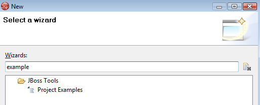
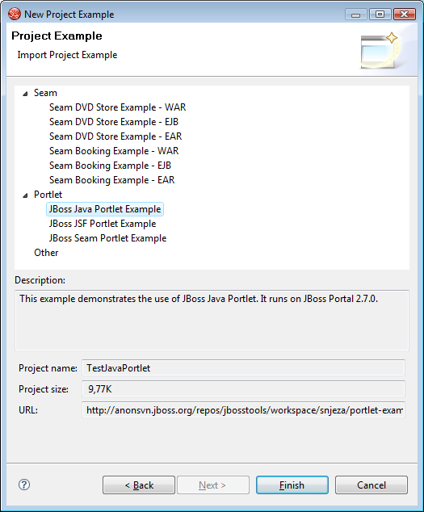

|
We have added an experimental feature called Project Example wizard that is intended to allow users to download example projects from a remote site and have it working out of the box.

The wizard provides a categorized list of projects that can be downloaded and configured in JBoss Tools.

We are still experimenting with the projects thus some of them might need to be manually configured after download to set the right datasource, runtime etc.
To avoid most of the manual configuration create a JBoss Server
that has "JBoss 4.2 Runtime" as its runtime name and a "JBoss
Application Server 4.2" as server name, then the current example
projects should work. In upcoming release we will make sure
these settings can be automatically adjusted.
|